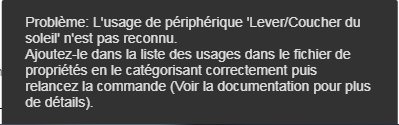
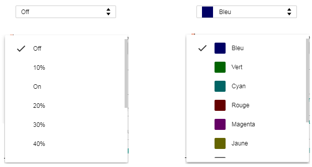
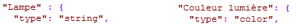
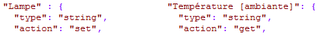
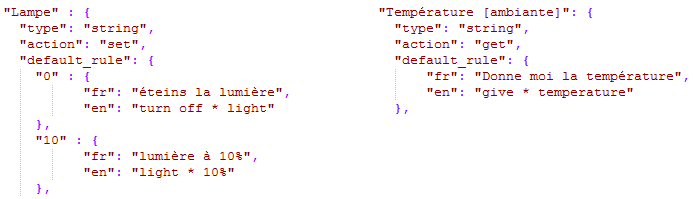
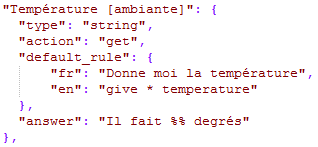

Le fichier periphUsage
Le fichier periphUsage.json contient quelques informations nécessaire au bon fonctionnement du plug-in.
La majorité des noms d'usages sont définis dans ce fichier mais il peut en manquer suivant le périphérique que vous associez avec votre box domotique.
Si vous voyez apparaître ce genre de message, ajoutez alors le nom d'usage avec ses paramètres dans le fichier periphUsage.json:

Si vous effectuez une modification du fichier en y ajoutant un nom d'usage, vous pouvez contribuer en le postant sur le projet github afin de l'inclure dans la version suivante.
Retrouvez ce fichier dans le répertoire <plug-in>\assets\usage
Il répertorie tous les "noms d'usage" possibles des périphériques avec leurs paramètres associés:
- "type" (optionnel):
- Par défaut "string" si non présent
- Ce paramètre est nécessaire pour la liste des valeurs dans l'onglet Règles dans le cas d'un type "couleur".
- Il peut avoir 2 valeurs:
- "string": Une liste de valeurs normale.
- "color": Une liste de valeurs affichant une couleur

valeurs normales valeurs couleurs

- "action" (obligatoire):
- Ce paramètre est nécessaire pour l'onglet Règles afin de connaître le type de périphérique.
- Il peut avoir 2 valeurs:
- "set": Reçoit du périphérique une information à afficher
- "get": Exécute l'action de la règle sur le périphérique

Usage Lampe, action "set" Usage Température, action "get"
- "default_rule" (optionnel):
- Ce paramètre est nécessaire pour l'onglet Règles afin de définir des règles par défaut qui apparaissent automatiquement à la création dune règle.
- Si "default_rule" n'existe pas, aucune règle par défaut n'est affichée.
- Pour les périphériques de type "get", un tableau d'objets sous la forme:
"default_rule'" : {
"fr" : <règle en français>,
"en: <règle en anglais>
}
- Pour les périphériques de type "set", un tableau d'objets sous la forme:
"default_rule" {
"<valeur>" : {
"fr" : <règle en français>,
"en: <règle en anglais>
}
}

Usage Lampe Usage Température
- "answer" (Optionnel):
- Pour les règles de type "GET" uniquement, il est nécessaire d'avoir une réponse pré-configurée afin qu'A.V.A.T.A.R puisse répondre une phrase en relation avec la question posée, par exemple "quelle température fait-il" nécessite une réponse "Il fait 20 degrés".
- Si non présent, A.V.A.T.A.R dit juste la valeur retournée par le périphérique.
- Le mot à remplacer par la valeur est définie par les caractères %% dans la phrase de réponse.

Créé avec HelpNDoc Personal Edition: Créer facilement des fichiers Qt Help